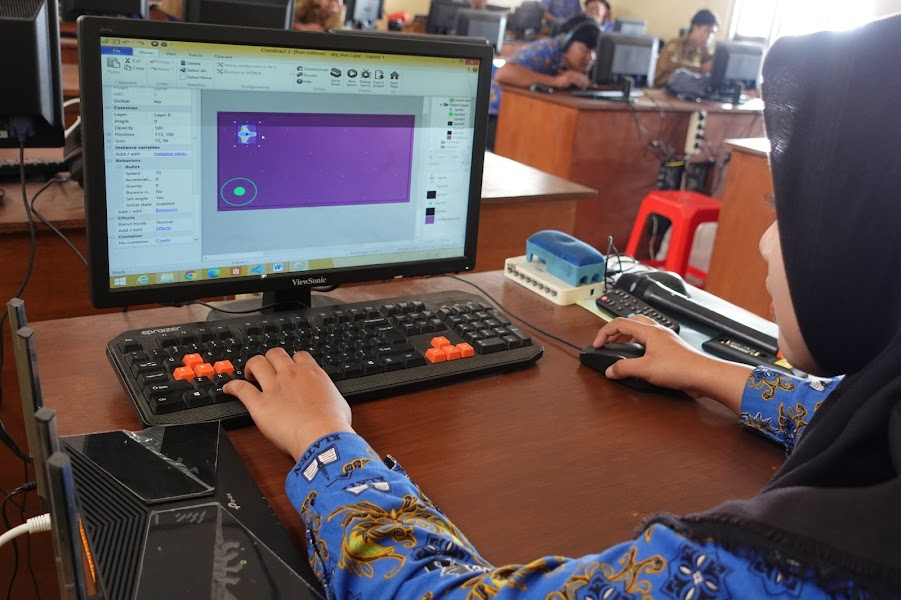

|  | |
|---|---|
| home
kontak galeri |
isi PPLGadalah singkatan dari pengembangan perangkat lunak dan gim siswa PPLG bahasa pemograman dan konsep dasar seperti coding. desain. dan algoritma jurusan PPLG atau pengembangan perangkat lunsk dan gim merupakan meripakan jurusan yang mempelajari tentang perkembangan perangkat lunak meliputi pembuatan, menejemen organisasi pengembangan perangkat lunak pemeliharan dan menejemen kualitas |
| design by:rusditampandermawan | |